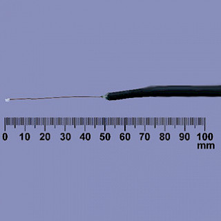
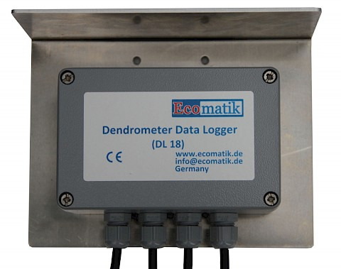
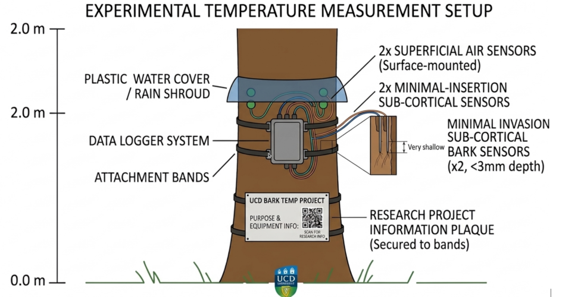

People: Roman Lira Acosta (Applied Environmental Science MSc student), Jon Yearsley (UCD)
This MSc project aims to correlate the temperature under the bark of coniferous trees to the external air temperature.
The project forms part of the insect pest modelling initiatives of the UCD Ecological Modelling Group. The project involves using the temperature of an insect’s local environment to predict the timing of key developmental events (such as adult emergence). Local air temperatures are normally used as the basis for these ecological models.
One important group of insects for Irish Forestry are the bark beetles. The larvae of these beetles develop under the bark of trees. We aim to improve our models of bark beetle development by relating the local air temperature to the temperature under the bark of coniferous trees.
Trees at two sites on campus will be used to measure bark and air temperatures. Each tree will have four temperature sensors attached to one data-logger (Figure 1, 2). These sensors and data logger will be at a height of 2 m up the main trunk of the tree. Two of the sensors will measure the temperature just underneath the tree’s bark (Figure 2). These will be placed on opposite sides of the tree. The remaining two sensors will measure the air temperature on the surface of the bark. Data logger and sensors will be attached to the tree using a zip-tie around the tree with cardboard protecting the bark of the tree.
The sensor's are fine wire resistance thermometers (image below) produced by ECOMATIK. The temperatures are recorded by a datalogger in a metal box (image below)


